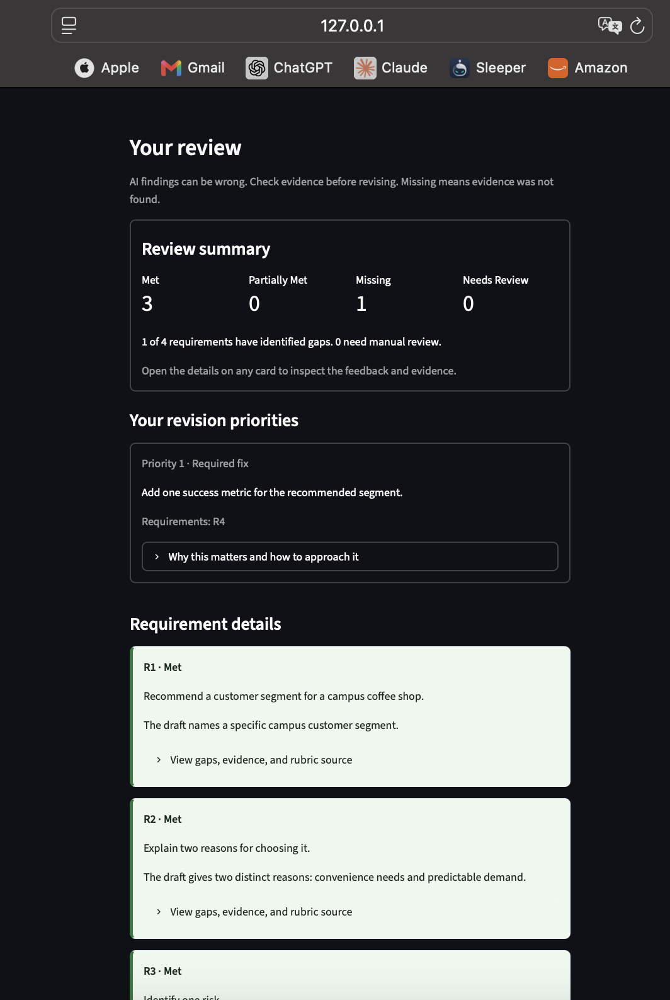
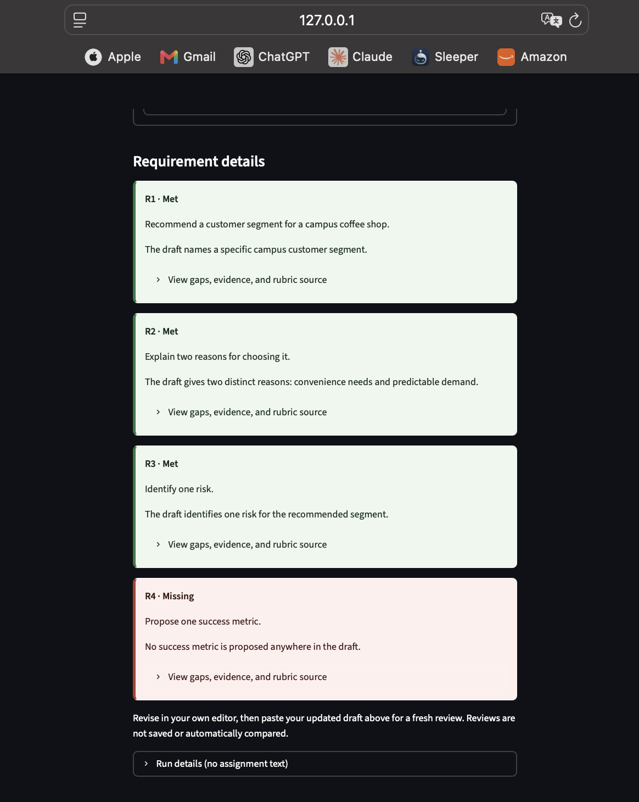
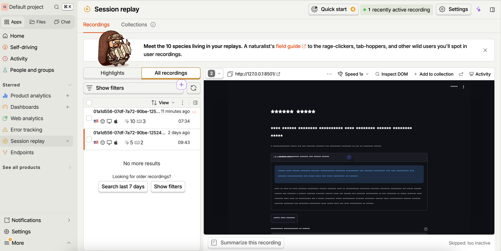
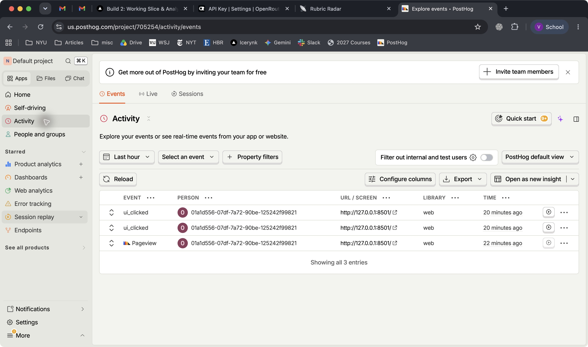

Know what’s missing. Understand what matters. Submit stronger work.
Current Status: Local MVP · PRD v2 documented November 15, 2026 · Last recorded checks: 20 Python tests and three analytics checks passed November 13
Demo: Run locally with the README instructions. Multiple live reviews completed; the builder confirmed the compact summary, cards, and revised requirement checks work. Screenshots below document a successful synthetic review on November 8. Outside-user testing remains outstanding.


Who is this for? MBA students reviewing written reports and project submissions. The builder can recruit 2–3 MBA classmates. Classmate archive feedback was reported November 15; structured usability sessions remain outstanding.
The painful "Before" workflow: Hypothesis: students manually compare drafts with instructions or use general-purpose AI feedback, then struggle to verify findings and prioritize revisions.
The "After" workflow with this product: Paste instructions and draft → Extract requirements → edit requirements and click Confirm & review my draft → inspect evidence-backed feedback → act on up to three priorities. Revise externally and reassess.
v1.1 frontend: Two primary buttons replace the previous three: extraction, then combined confirmation and review. Supporting privacy and review-limit details are expandable; sharing consent stays visible. Compact requirement cards use green (Met), amber (Partially Met), red (Missing), and blue (Needs Review), always with written labels and expandable evidence. This change does not establish measured usability improvement.
Riskiest Assumption: Evidence-backed feedback must help students revise more effectively than ChatGPT with a strong prompt. Incorrect judgments and unactionable advice could erase that value.
Simple Architecture: Pasted text → server → LLM requirement extraction → student confirmation → LLM evaluation → validated feedback. Implemented locally in Python/Streamlit with OpenRouter; no accounts or database. Broad model quality is not yet validated.
Proposed pilot: 2–3 MBA classmates using their assignments, compared with a consistent strong ChatGPT prompt. Targets are hypotheses: at least 90% explicit requirement recall before corrections; all displayed quotes match the draft; no major unsupported Met judgment in human review; at least two testers complete the flow unaided, make a useful revision, and prefer the product for a concrete reason. This small pilot cannot prove broad reliability or improved grades.
Every confirmed requirement receives one status and an explanation. Only explicit requirements are assessed; evidence is never invented. Mandatory gaps take priority over optional coaching. No overall grade is displayed. Assignment text must stay out of persistent application storage, logs, and analytics; provider data policies remain to be checked.
Check whether the draft addresses explicit requirements using the supplied instructions and draft. A heading alone is not an answer, but a relevant brief response can meet a requirement. Assess depth, rigor, structure, and formatting only when explicitly requested. Verification against course readings, lectures, case exhibits, or other course materials is out of scope; judgments needing unavailable context receive Needs Review. Required fixes identify demonstrated gaps in explicit requirements; inferred conventions such as email greetings are not mandatory. Omit generic ambiguity warnings and advice solely demanding extra depth. Recommendations guide students without writing replacement answers.
Record extraction errors before student corrections separately from evaluation errors against confirmed requirements. Useful revisions are stronger value evidence than preference alone. The approved prototype has provisional bounds of 12,000 instruction characters, 30,000 draft characters, and 25 requirements. The configurable initial model is DeepSeek V4.1 Flash via OpenRouter. One synthetic review returned three requirements (two Met, one Missing) and one recommendation, with $0.003135 reported inference cost and 10.84 seconds combined API duration. Broader quality and representative performance remain unvalidated.
Recommended Build 4 track: A — domain quality, with 10 cases and an outside target-user review. The full PRD, acceptance criteria, limitations, and open decisions are available in PRD.md in the repository. This page and the PRD must be kept aligned.
Components and data flow: Streamlit in app.py holds session inputs and consent; radar.py validates inputs, sends two server-side OpenRouter requests (extraction, then confirmed review), and checks output structure and exact quotations before feedback. The key stays in the server environment. No accounts, database, or saved reviews. Each request times out after 90 seconds; a compatible provider is required by the privacy routing controls.
Analytics acceptance: The shared docs/posthog.js records pageviews and fixed-name clicks with a surface label. Local events and initial masked replay were observed November 13; published-page ingestion and complete extraction-to-feedback replay remain pending. Inputs and replay text are masked; autocapture, console capture, and network-body capture are off. Clicks measure intent and do not establish review completion or model quality.
Risk and next check: Valid JSON and matching quotes can still support an incorrect judgment. Run a fresh synthetic review with a deliberately omitted explicit requirement, compare findings with a human reference, measure cost/time, and inspect feedback masking. Broader evaluation and outside-user testing remain outstanding.
Budget and recovery: Historical full-review costs span $0.003135–$0.01418914 across three recorded runs, with 10.84–77.30 seconds combined API time; these are limited observations, not budgets or end-to-end timings. Total spending cap, weekly time budget, subscription allocation, and PostHog billing remain unreported. Recoverable errors preserve session inputs; Git checkpoints support local code recovery. Provider spending controls and cloud rollback remain to be defined before public app deployment.
Current batch 3 checkpoint: Local UI now includes guest entry, gated auth/recovery, classes/projects/history, explicit save/delete controls, unsaved-work prompts, a read-only synthetic sample library and Load demo example. Cloud accounts/saves remain disabled until actual Supabase security verification. Builder will create the account/project. Latest checks: 61 mocked Python and four analytics tests passed; local Chrome verified the sample walkthrough and demo input fill with consent unchecked. No model calls or deployment; live database/email, phone and PostHog/replay proof remain pending. Earlier batch notes below are historical where they differ.
Batch 2 foundation, November 17: Auth/storage backend modules and SQL schema/security scripts are written, with no new dependencies. App UI remains session-only; cloud provisioning, schema execution, sign-in/library controls and deployment are pending. Mocked checks: 44 Python tests passed initially; 46 passed after correcting password-reset status handling and adding two regression tests. Three analytics checks and pip check passed. No model calls or live SQL/Auth tests. SECURITY.md records this limited evidence; it is not a completed audit.
Beginner lane selected November 17. Batches 1–3 are approved/completed locally; auth/archive UI is now present behind a disabled cloud gate, while accounts/storage are not provisioned and deployment is pending. Target: Streamlit Community Cloud for the app, Supabase Auth for sign-in and Postgres with database-enforced ownership for private Class → Project → Saved reviews. This replaces the earlier local SQLite proposal; classes are private folders, not shared sections.
Continue as guest keeps the existing review flow without coursework archive writes. Signed-in students explicitly save project instructions and immutable review snapshots; reopening makes no model calls. Context/account changes clear working coursework and consent. Confirmed deletion removes selected owned records and descendants. Disclose cloud storage and retention limits; no automatic comparisons or cross-project AI memory.
Before release: complete the audit in SECURITY.md, prove direct API access by a second account cannot read/change another account’s data, capture a refused-write screenshot, and verify live phone use plus PostHog events and complete masked replay. The audit and all deployment/security evidence remain pending. PRD section 13 and Plan.md contain choices, launch decisions, resume instructions and batches; batch 4 audit/deployment needs implementation approval. Submission: live URL, repo/lane/SECURITY.md note and refused-test screenshot. Bring phone November 24 per the builder’s supplied brief.

